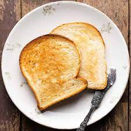

Toast

This is a simple toast recipe, very cozy and easy to make!
Ingredients:
- 2 Pieces of White Bread
- 2 tbsp butter
- 1 tbsp garlic powder
Steps:
- Heat 2 pieces of white bread in toaster
- Melt butter in microwave on low for 30 seconds
- Spread butter across toasted bread slices
- Evenly sprinkle garlic powder onto buttered toast slices